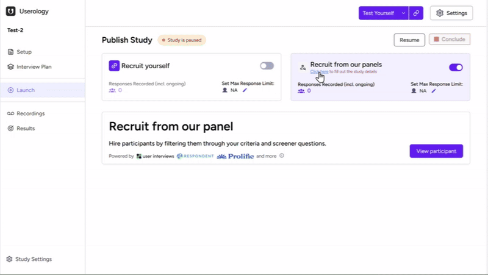
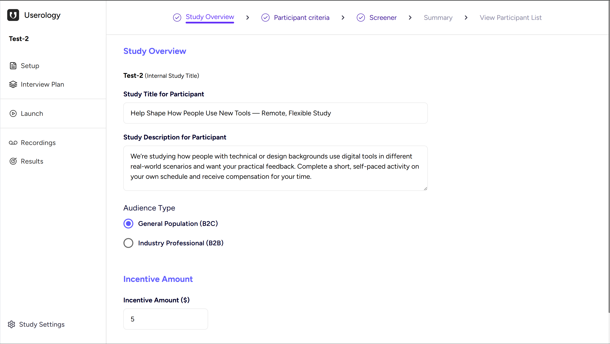
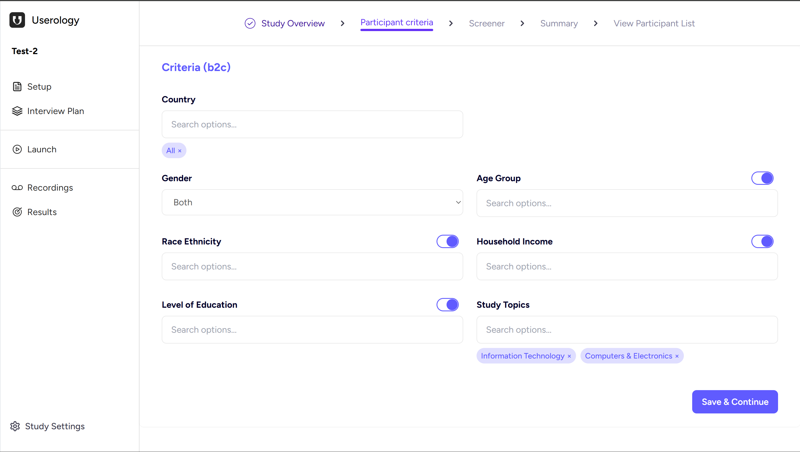
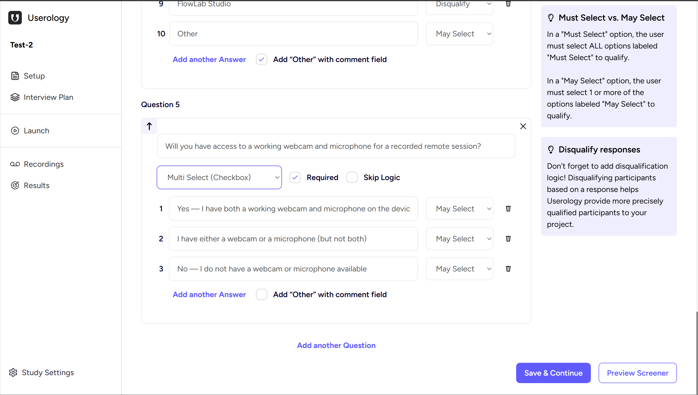
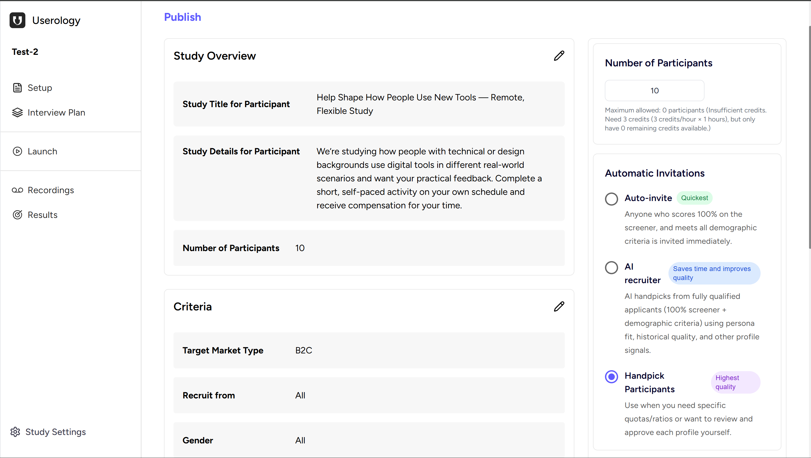
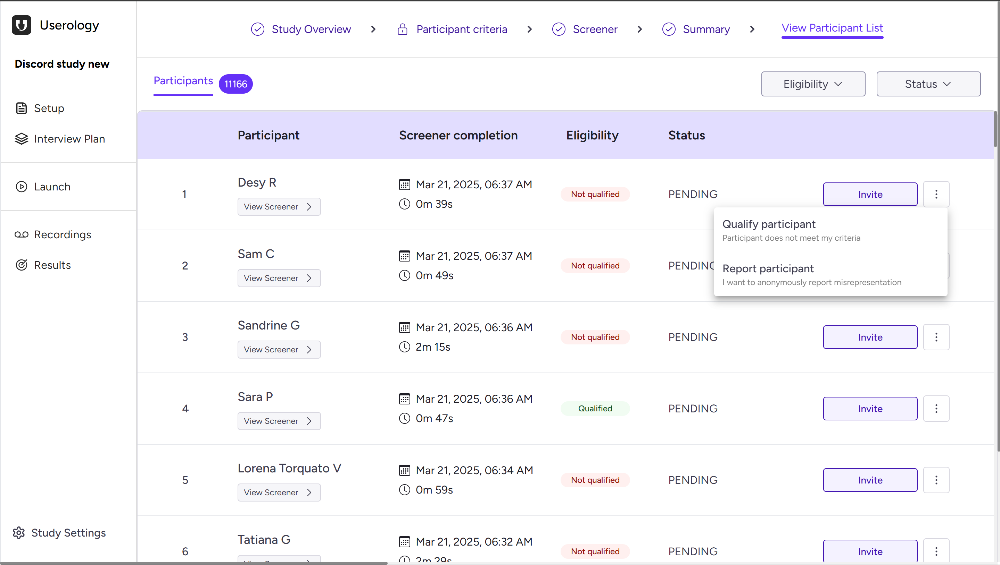

This is the final checkpoint before your study goes live. Setting up or editing your study details helps Userology understand what you want to learn and who you want to learn it from. A well-defined setup leads to better participants, higher-quality responses, and smoother recruitment.
Here's how the flow works:
Path 1: Summary Page → Publish or Start with 1 Participant → View Participant List
Path 2: Summary Page → Edit (Overview, Criteria, Screener) → Publish or Start with 1 Participant → View Participant List
How to Start
From your Study Launch Page, go to the Recruit from our panels section and click Click here to fill out the study details to open the guided study setup flow.

When you click "Click here to fill out the study details", you are taken directly to the Summary (Publish) page.
This page acts as the central control point for your study.
From here, you can either:
Review and publish your study immediately, or
Edit any part of the setup before publishing
The Summary Page: Your Control Center
On the Summary page, you can:
Review your Study Overview, Participant Criteria, and Screener
Set the number of participants
Select how participants are invited by choosing Auto-Invite, AI Recruiter, or Handpick Participants
Publish your study.
Or start small by selecting Start with 1 Participant.
If everything looks good, you can publish directly from here, Or you can edit any section by following the steps given below.
Step 1: Study Overview
This step defines what study participants see before deciding to apply to your study.

Internal Study Title
Shown at the top (e.g., "Test-2")
Only visible to you
Helps you manage and identify studies internally
Study Title for Participant
This is the first thing participants see when browsing available studies.
Best practices:
Keep it human and outcome-focused
Avoid internal or technical labels
Study Description for Participant
Use this section to explain:
What participants will do
Approximate time commitment
That there are no right or wrong answers
This text sets expectations and builds trust with potential participants.
Audience Type
Choose who this study is for:
General Population (B2C) — Everyday consumers
Industry Professional (B2B) — Business or professional audiences
Your choice here determines which participant criteria are available in the next step.
Incentive Amount
Enter the reward participants will receive
Incentives directly impact recruitment speed and quality
Click Save & Continue to proceed.
Step 2: Participant Criteria
This step defines who is eligible to apply to your study.
You'll see Criteria (B2C) if you selected General Population, or Criteria (B2B) for Industry Professional.

Be selective with your filters. Every filter you turn on shrinks your participant pool. Only enable criteria that are essential to your research - if a filter isn't critical, leave it off.
Available Criteria
- Country (defaults to All)
- Gender
- Age Group
- Race / Ethnicity
- Household Income
- Level of Education
- Study Topics
Click Save & Continue when ready.
Step 3: Screener Questions
Screener questions confirm that eligible participants also meet your behavioral or usage requirements. This ensures you get the right people for your research.

Creating a Question
For each question:
Enter the question text
Choose answer type:
Single Select (Radio) — Participant can choose one option
Multi Select (Checkbox) — Participant can choose multiple options
Required & Skip Logic
Required — Ensures participants must answer before proceeding
Skip Logic — Lets you route participants based on their answers (advanced use)
Qualify vs Disqualify
For each answer option, you can set:
Qualify — Participant can proceed to the study
Disqualify — Participant is screened out
Inline guidance helps explain why disqualification improves participant quality and research outcomes.
Advanced Options
May Select vs Must Select (Multi-select only) — Control whether participants may select or must select specific options
Add "Other" with comment field — Allow participants to provide custom responses
Reorder questions (↑) — Arrange questions in the desired order
Delete questions (✕) — Remove unwanted questions
Preview Your Screener
Click Preview Screener to see exactly what participants will experience before continuing. This helps you verify the flow and catch any issues.
Click Save & Continue to proceed.
Step 4: Summary & Publish
This is your final review before launching the study.

Review Sections
You'll see a summary of:
Study Overview — Title, description, and incentive
Participant Criteria — Your demographic filters
Number of Participants — Target count and credit requirements
Use the ✏️ edit icons to quickly jump back and make changes to any section.
Number of Participants
This section shows:
Target participant count
Credit requirements
Any credit limitations or errors (e.g., insufficient credits)
Choose How Participants Are Invited
Select the invitation method that best fits your needs:
Auto-Invite (Quickest) — Instantly invites participants who qualify. Best for fast recruitment when you trust the criteria.
AI Recruiter (Balanced) — AI reviews qualified applicants for quality signals. Good balance of speed and quality.
Handpick Participants (Highest quality) — Manually review and approve each participant. Best when you need specific quotas or want full control.
When ready, click Publish to launch your study.
Step 5: View Participant List
The View Participant List page gives you full visibility and control over who has applied to your study and what happens next.
This is where you can:
Review screener responses
See who qualified or didn't
Invite participants
Manually override decisions if needed
Report suspicious or inaccurate responses
Think of this page as your recruitment control center.

What You'll See on This Page
Each row represents one participant who completed (or attempted) your screener.
Participant Name
Displays the participant's name or identifier
Click View Screener to see their exact screener responses
Screener Completion
Date and time the screener was completed
Time taken to complete the screener
Eligibility Status
This reflects how the participant performed on your screener and criteria:
Qualified (green): The participant met all requirements
Not Qualified (red): The participant failed one or more screener or criteria checks
This status is automatically calculated based on your setup.
Participation Status
Common statuses include:
Pending — Participant has not yet been invited or scheduled
(Other statuses may appear once invitations or sessions begin)
Actions You Can Take
Invite
Click Invite to send the study invitation to that participant
Available for both qualified participants and (if needed) manually selected ones
Tip: Even if someone is marked "Not qualified," you still retain manual control.
View Screener
Opens the participant's full screener responses
Useful for validating edge cases or reviewing borderline answers
More Actions (⋮ Menu)
Click the three-dot menu to access additional options:
Qualify Participant
Manually mark a participant as qualified
Useful if:
A participant narrowly missed criteria
You want to override automated logic intentionally
Report Participant
Report suspected misrepresentation or dishonest responses
Reports are anonymous and help maintain panel quality
Filters and Sorting
At the top of the page, you can refine what you see:
Eligibility filter: Quickly view only Qualified or Not Qualified participants
Status filter: Narrow down participants based on their current state (e.g. Pending)
These filters help when you're working with large applicant pools.
If you need further help, please email us at support@userology.co
Was this article helpful?
Thank you for your feedback!